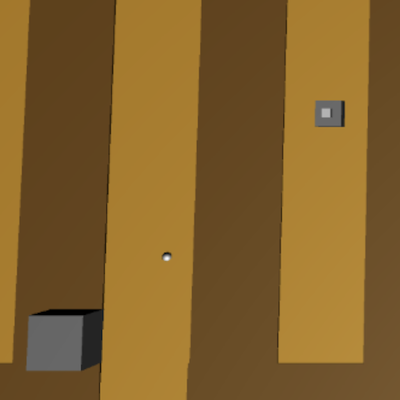

実装機能
|  |
敵を攻撃する機能 タレットは射程距離内の敵を攻撃することができます。 これにより、敵が目的地に到達する前に制圧することができます。 |

|
敵を生成し動く機能 戦闘時間になると、敵が生成されて目的地まで移動します。 敵が目的地に到達すると、ライフが消費されます。 |

|
タレットの購入し置く機能 タレットを新しく購入して配置できます。 そしてタレットの攻撃力も強化できます。 |
社会に貢献しようとしたこと
クリエイティブなゲームを制作してリリースするので、ゲームをしながら一味違う楽しさを感じることができます。
クリエイティブなゲームを制作してリリースするので、ゲームをしながら一味違う楽しさを感じることができます。
背景と目的
最近、人々はスマートフォンを非常に多く使用しているので、創造的なスマートフォンゲームを作成して人々にサービスを提供するために、ゲーム開発者になることに備えて、私だけのゲームを制作するようになりました。
最近、人々はスマートフォンを非常に多く使用しているので、創造的なスマートフォンゲームを作成して人々にサービスを提供するために、ゲーム開発者になることに備えて、私だけのゲームを制作するようになりました。
学んだこと
- UnityでCollisionを処理する方法と、CollisionとTriggerの違いを学びました。
- UnityでCoroutineとIEnumeratorで定期的な処理を開始する方法と停止する方法を学びました。
進行手順
- Unity 3Dプロジェクトを作成し、土地と道を実装しました。
- 敵が登場すると、道に沿って移動するようにしました。 これは、途中でColliderを配置し、Colisionが発生するたびに目的地を変更する方法で実装されました。
- 新しいタレットを作成し、攻撃力をアップグレードできるようにUIを実装しました。
- タレットを新しく作成するときは、生成する位置をタッチして生成するようにしました。 タレットの位置を移動することも同様にタレットをタッチした後、移動する位置をタッチして移動させるようにしました。
- タレットの射程距離内に敵が入ったら攻撃するようにしました。
- 60秒ごとに敵がレベルアップ後に登場するようにしました。
- このようにして目的のプログラムを実装できました。
能力強化のために最も努力したこと
創造的な3Dゲーム制作
創造的な3Dゲーム制作
全体構造

使用技術
Unity
Unity
開発環境
Unity 2020.1.9f1
Unity 2020.1.9f1